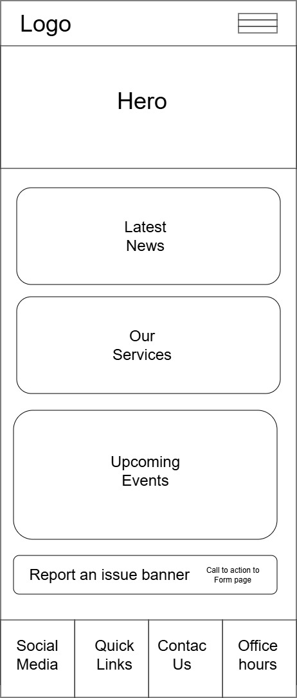
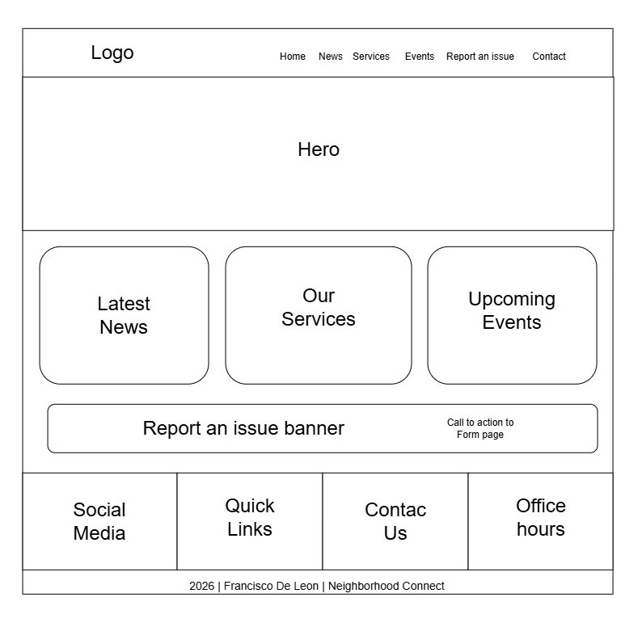

Site Name
Neighborhood Connect
I select the name Neighborhood Connect, because it represents a central place where residents can stay informed, communicate with the neighborhood association, and access important community information. for the neighbors.
Site Purpose
Neighborhood Connect is a community website designed to improve communication between residents and the neighborhood association. The website provides community news, official announcements, information about neighborhood services, an events calendar, and an online form where residents can report issues, ask questions, or submit suggestions.
Scenarios
- When is the next neighborhood meeting?
- How can I report a water supply problem?
- What are the neighborhood security rules?
- When is the next community cleaning day?
Color Schema
The following colors will be used throughout the website:
Dark Blue
#0B3C5D
Light Blue
#328CC1
White
#FFFFFF
Light Gray
#F5F5F5
Green
#4CAF50
Typography
Poppins
Used for headings, page titles, and navigation.
Roboto
Used for paragraphs, forms, and general website content.
Wireframes
Mobile View

Desktop View
